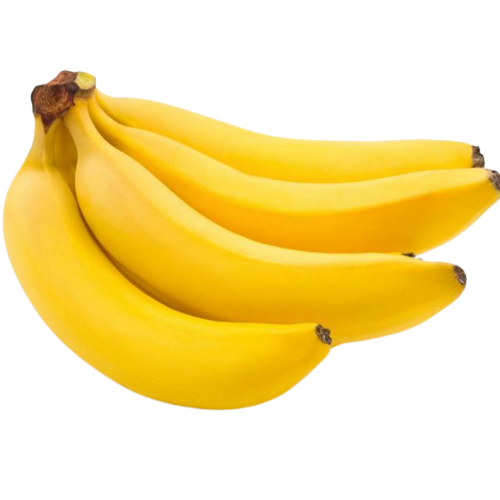

Pisang adalah buah-buahan yang dihasilkan oleh beberapa jenis tumbuh-tumbuhan berbunga herba besar dalam genus Musa. Di sesetengah negara, pisang digunakan untuk memasak boleh dipanggil plantains, berbeza dengan pisang pencuci mulut. Buah ini berubah-ubah dari segi saiz, warna dan ketegasan, tetapi biasanya panjang dan melengkung, dengan isi lembut yang kaya dengan kanji ditutup dengan kulit yang berwarna hijau, kuning, merah, ungu, atau coklat apabila masak. Buah-buahan yang tumbuh dalam kelompok tergantung dari bahagian atas tumbuhan. Hampir semua parthenocarpic yang boleh dimakan pisang moden datang dari dua spesies liar.
